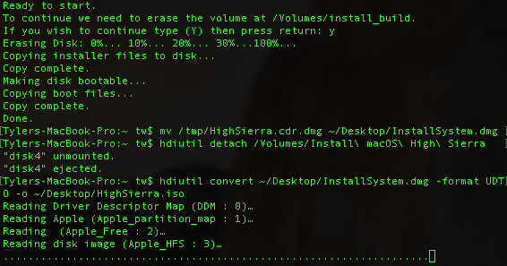
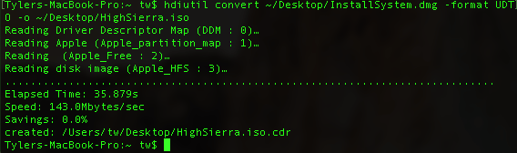
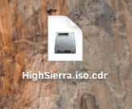
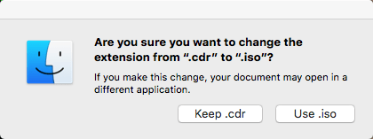

Instructions¶
Download macOS High Sierra from Itunes
Run these commands in terminal one at a time
hdiutil create -o /tmp/HighSierra.cdr -size 5200m -layout SPUD -fs HFS+J hdiutil attach /tmp/HighSierra.cdr.dmg -noverify -mountpoint /Volumes/install_build sudo /Applications/Install\ macOS\ High\ Sierra.app/Contents/Resources/createinstallmedia --volume /Volumes/install_build mv /tmp/HighSierra.cdr.dmg ~/Desktop/InstallSystem.dmg hdiutil detach /Volumes/Install\ macOS\ High\ Sierra hdiutil convert ~/Desktop/InstallSystem.dmg -format UDTO -o ~/Desktop/HighSierra.iso
Sample result 1:
Sample result 2:
Resulting file:
Rename the file by removing .cdr from the end and confirm using .iso
Result File: